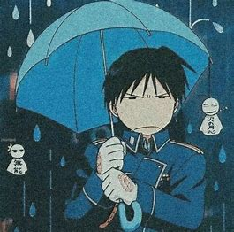

Roy Mustang
Alquimista das Chamas


Sobre
Roy ostenta o título de "Alquimista das Chamas"pela sua habilidade de criar fogo com a alquimia, e esforça-se ambiciosamente para se tornar o próximo líder de Amestris.
Apesar de sua ambição, conforme a série continua Mustang decide derrubar o Estado Militar após seu melhor amigo, Maes Hughes, ser morto por homúnculos, que estão controlando os militares.
Consequentemente, junto de seus companheiros mais confiáveis Mustang decide derrotar a força militar.